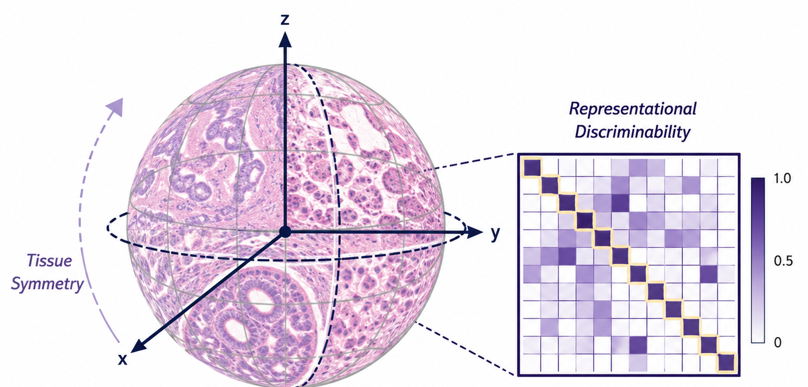

28 Evaluated Foundation Models
INVEX systematically audits the top pathology foundation models in the field.

Submitted to WACV 2027
Foundation models for computational pathology are currently evaluated via downstream, supervised linear probing or kNN classification on specific cohorts. INVEX introduces a purely intrinsic, zero-shot evaluation framework requiring no labels and no fine-tuning. The Multi-Stage Pipeline: 1. Invariance (Rotational Consistency): Because histology tissue has no canonical orientation, a good encoder must map rotated views of the same tissue into the exact same region of the embedding space. We measure how well the neighborhood structure is preserved under dihedral rotations (90°, 180°, 270°) using Retention@10. 2. Expressiveness (Feature Diversity): We compute the effective rank and uniformity of the clean embedding cloud. A powerful encoder utilizes many dimensions to ensure distinct biological features land in separate areas of the latent space. 3. Combined Score: We model directions with von Mises–Fisher (vMF) distributions on the unit hypersphere. The quality likelihood-ratio \(Q_{\text{vMF}} = \log \kappa_{\text{nuis}} - \log \kappa_{\text{bio}}\) captures both invariance and expressiveness to produce the final INVEX rank.
INVEX systematically audits the top pathology foundation models in the field.
| Dataset | Organ | Task | Classes | Patches | Mag | Source |
|---|---|---|---|---|---|---|
| MHIST | Colorectal | Polyp type | 2 | 3,152 | 20× | Link |
| CHAOYANG | Colon | Tissue type | 4 | 6,160 | 20× | Link |
| WSSS4LUAD | Lung | Tissue type | 3 | 4,693 | 40× | Link |
| NCT-CRC-VAL | Colorectal | Tissue type | 9 | 7,180 | 20× | Link |
| BreaKHis | Breast | Benign/malignant | 2 | 7,909 | Multi | Link |
| LC25000_COLON | Colon | Tumor benign/adeno | 2 | 10,000 | 20× | Link |
| SICAPv2 | Prostate | Gleason grading | 4 | 12,081 | 10× | Link |
| LC25000_LUNG | Lung | Tumor subtype | 3 | 15,000 | 20× | Link |
| CCRCC_Lymphocyte | Kidney (ccRCC) | Immune vs tumor | 2 | 25,095 | 20× | Link |
| CCRCC_Tissue | Kidney (ccRCC) | Tissue type | 6 | 52,713 | 20× | Link |
| digestPath | Colon/GI | Cancerous/non | 2 | 70,379 | 20× | Link |
| NCT-CRC | Colorectal | Tissue type (train) | 9 | 107,180 | 20× | Link |
| Kather-MSI-CRC | Colorectal | MSI/MSS | 2 | 192,312 | 20× | Link |
| Kather-MSI-STAD | Stomach | MSI/MSS | 2 | 218,578 | 20× | Link |
| TCGA-TILs | Pan-cancer | TIL detection | 2 | 227,699 | 20× | Link |
| PCam | Lymph node | Metastasis | 2 | 327,680 | 10× | Link |